Введение
Добро пожаловать на Minecraft Times — ванильный сервер без привилегий и приватов. Здесь мы вернули классический дух Minecraft, где каждый игрок равен, а успех зависит только от твоих навыков и упорства.
На нашем сервере вы найдете честную игру, дружное сообщество и множество возможностей для творчества и развития.
Команды
Основные команды, доступные на сервере:
/home — Телепортация домой/sethome — Установить точку дома/msg [игрок] [сообщение] — Личное сообщение/skin set [Ник скина] — Сменить скин/co inspect — Просмотр недавних действий у блока![сообщение] — Глобальный чат/cd create local [file] [name] — Загрузить кастом музыку в пластинку
Моды
Моды доступные на сервере:
- Simple Voice Chat
- Pat Pat
Механики
На сервере реализованы следующие игровые механики:
-
Игроки делятся на PvP и PvE. По умолчанию — PvE.
Смена группы через @Flory987 (тг): первый раз бесплатно, далее — 19 руб.
PvP игроки выделены так:
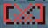
Особенности
Уникальные особенности нашего сервера:
- Отсутствие донатных привилегий, влияющих на геймплей
- Ненавязчивый, глубокий лор
- Активное комьюнити и регулярные ивенты
- Профессиональная администрация
Экономика
Экономическая система сервера построена на принципах честности и баланса:
- Естественная рыночная экономика
- Игроки сами определяют как им торговать
- Никаких аукционов
🌊 SummerPlugin — Вики для игроков
Все летние механики сервера.
🎣 Рыбалка — Рыбные места
Рыбные места — особые точки на воде, где рыба клюёт быстрее и есть шанс получить редкие предметы.
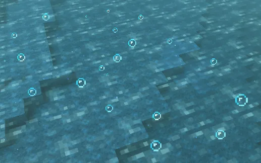
Как это работает
- По всему миру автоматически появляются рыбные места — видно по кружащимся частицам над водой
- Поклёвка происходит быстрее (3–5 сек вместо обычных 5–30 сек)
- При поклёвке нужно вовремя подсечь (ПКМ) — появится «✔️ Подсечка!» или «✘ Рыба сорвалась!»
- Место живёт несколько минут, потом исчезает и появляется в другом месте
Особые предметы (шанс вместо обычной рыбы)
| Предмет | Шанс |
|---|
| 🕶 Солнечные очки | 4% |
| 🌱 Священное семечко | 2% |
| 🐚 Ракушечный амулет | 1% |
💡 Выпавшие предметы — ценные вещи, которые можно продать другим игрокам.
Советы
- Частицы рыбного места видны издалека — плыви на них
- Рыбные места появляются только в достаточно глубокой воде
🪣 Сито — Просеивание
Сито — кастомный инструмент для поиска ресурсов в песке и гравии прямо на пляже.
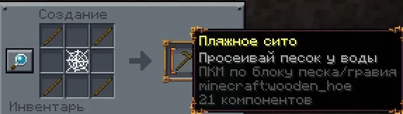
Как пользоваться
- Возьми сито в руку
- Встань рядом с водой (обязательно!)
- Нажми ПКМ по блоку Песка или Гравия
- Появится мини-игра — нажимай ПКМ в нужный момент чтобы продолжить просеивание
- Через несколько секунд выпадут ресурсы
Что выпадает
| Лут | Включён по умолчанию |
|---|
| Глиняный шарик | ✅ |
| Гравий | ✅ |
| Кремень | ✅ |
| Железный самородок | ✅ |
| Золотой самородок | ✅ |
| Изумруд | ✅ |
| Алмаз | ✅ |
| Осколок аметиста | ✅ |
| Призмариновый осколок | ✅ |
| 🐚 Ракушечный амулет | 1% шанс |
⚠️ Важно
- Сито имеет прочность — при поломке исчезает
- Прочность видна в лоре предмета (зелёный / жёлтый / красный цвет)
- Нужно быть у воды — без воды рядом не работает
🍦 Мороженое — Ледогенератор
Ледогенератор — особый блок, который производит Колотый лёд. Из него делается мороженое.
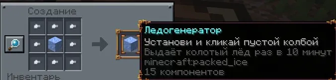
Как пользоваться
- Поставь ледогенератор
- Нажми ПКМ пустой бутылкой по ледогенератору — получишь ❄️ Колотый лёд
- После использования ледогенератор уходит на перезарядку (по умолчанию 10 минут)
- Если кулдаун ещё идёт — увидишь «⏳ Зарядится через X:XX»
Рецепты мороженого (бесформенный крафт)
| Мороженое | Ингредиенты |
|---|
| 🍓 Ягодное | Ягоды + Колотый лёд + Сахар + Молоко |
| 🍉 Арбузное | Ломтик арбуза + Колотый лёд + Сахар + Молоко |
| 🍫 Какао | Какао Бобы + Колотый лёд + Сахар + Молоко |
| 🌟 Светлячковое | Светящиеся ягоды + Колотый лёд + Сахар + Молоко |
Эффект от мороженого
- Съешь мороженое → мини-игра: следи за температурой (ПКМ по верстаку чтобы забрать)
- Следи за температурой: нужно выйти из верстака и нажать ПКМ в голубой зоне
- Если поймал идеальную температуру (20–45°) → «✦ Идеальная температура! Освежающее мороженое!»
- Обычная версия восстанавливает голод, улучшенная увеличивает время действия эффекта
🦟 Ночные создания — Комары и Светлячки
По ночам появляются рои комаров и светлячки.
Комары 🦟
- Появляются ночью в виде чёрных частиц
- Появляются в игровое время 13000–23500
- Летают роем рядом с игроками — наносят урон (по умолчанию 0.5 ❤️ за удар)
Светлячки ✨
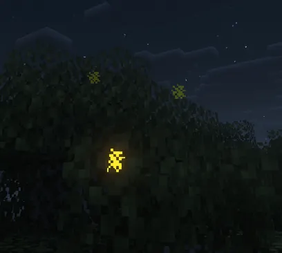
- Появляются ночью в виде светящихся частиц
- Можно поймать в банку — подойди вплотную с банкой для светлячков в руке
Банка для светлячков
Подойди к светлячкам с бутылкой в руке — поймаешь!
🐛 Известный баг
- Если у тебя только одна банка для светлячков — поставить её не получится
- То же самое с обычной одной бутылкой
🔮 Механики сервера
Уникальные кастомные системы.
🔮 Руны
Руны — уникальная система сервера, позволяющая обойти стандартные лимиты игры и прокачать зачарования на +1 уровень выше максимального.
📜 Доступные улучшения
| Зачарование |
Исходный уровень |
|
Улучшенный уровень |
| Острота |
V |
➔ |
VI |
| Защита |
IV (или V) |
➔ |
V (или VI) |
| Прочность |
III |
➔ |
IV |
⚠️ Важно
- Список зачарований будет постепенно расширяться в будущих обновлениях!
- Пока что руны можно получить только в ивентах!
🔨 Пошаговая инструкция
Предмет не прокачивается мгновенно при обычном клике. Процесс проходит в два этапа с использованием Стола кузнеца.
🔹 Этап 1
Снятие лимита (Интерфейс)
- Возьмите руну в руку и нажмите ПКМ по Столу кузнеца.
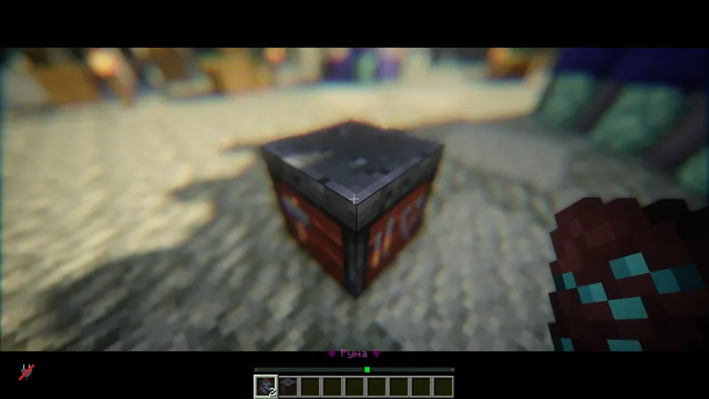
- В открывшемся меню разложите предметы по трём слотам:
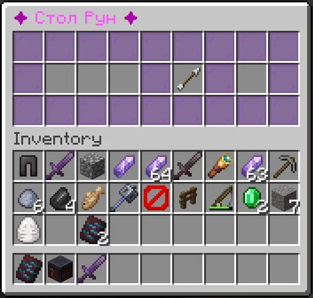
Слоты меню
- Слот 1 — Сама Руна
- Слот 2 — Предмет, который вы хотите улучшить
- Слот 3 — Специальный катализатор для этого зачарования
- Заберите предмет. Теперь на нём открыт доступ к следующему уровню!
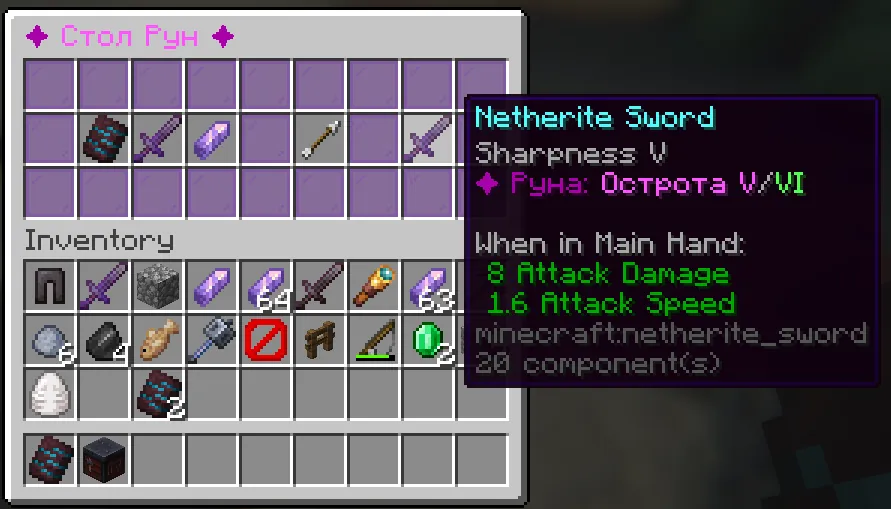
🔹 Этап 2
Финальный апгрейд
Чтобы окончательно получить уровень +1, объедините изменённый предмет на наковальне со второй книгой такого же максимального уровня (например, ещё одной Остротой V).
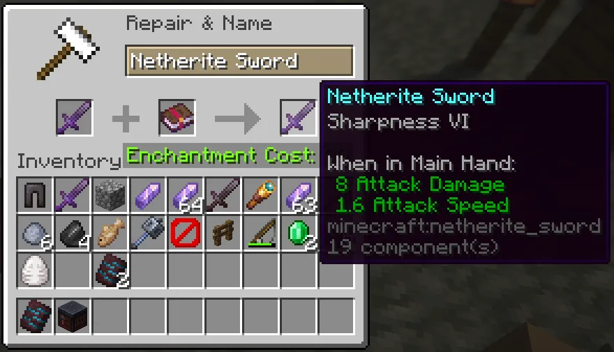
🏛️ Боги и Профили Игроков
На сервере действует уникальная система профилей, которая связана со временем в игре,
социальным статусом и благословением древних Богов.
👤 Как открыть профиль
/profile — открыть собственный профиль- Подойти к игроку и нажать
Shift + ПКМ — открыть его профиль
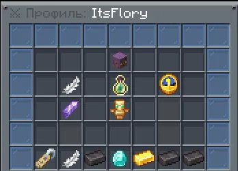
📋 Что находится внутри профиля
| Параметр |
Описание |
| Ник игрока |
Имя пользователя на сервере |
| Выбранный Бог |
Покровитель персонажа |
| Ранг |
Статус, зависящий от времени игры |
| Отыгранное время |
Количество часов на сервере |
| Социальный рейтинг |
Репутация среди игроков |
| Таймы ⌛ |
Основная внутриигровая валюта |
| Купоны 🎟️ |
Донат-валюта сервера |
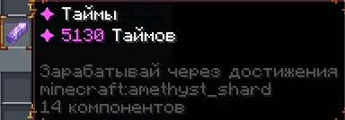
🌟 Система Богов и Алтари
- При первом входе на сервер игрок случайным образом получает одного из Богов-покровителей.
- Каждый Бог имеет собственный алтарь и уникальную постройку в мире.
- Алтари спрятаны в разных уголках карты и могут быть найдены во время путешествий.
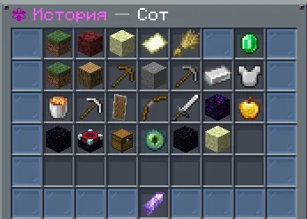
Что можно делать у алтаря
- Просматривать список божественных очивок
- Отслеживать прогресс выполнения
- Получать награды в Таймах
- Пользоваться Божественным магазином (в разработке)
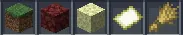
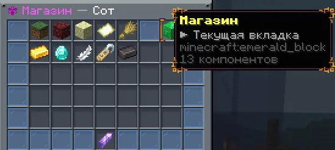
📈 Ранги и Время
- В профиле отображается общее время, проведённое на сервере.
- Чем больше времени игрок проводит в мире Minecraft Times, тем выше становится его Ранг.
- Повышение ранга происходит автоматически.
⚖️ Социальный рейтинг
- Каждый игрок может оценить другого игрока положительно (+) или отрицательно (-).
- Социальный рейтинг отражает отношение сообщества к игроку.
⚠️ Важно
Оценить одного игрока можно только один раз за всё время.
Изменить или отозвать свой выбор невозможно.
🪙 Экономика: Таймы и Купоны
| Валюта |
Назначение |
| ⌛ Таймы |
Основная игровая валюта |
| 🎟️ Купоны |
Магазинная (донатная) валюта |
💡 Таймы можно получить за выполнение божественных очивок,
участие в ивентах и другие серверные активности.
Будущие обновления
В будущих патчах Купоны можно будет обменивать на заработанные Таймы.
Сейчас система временно отключена и находится в разработке.